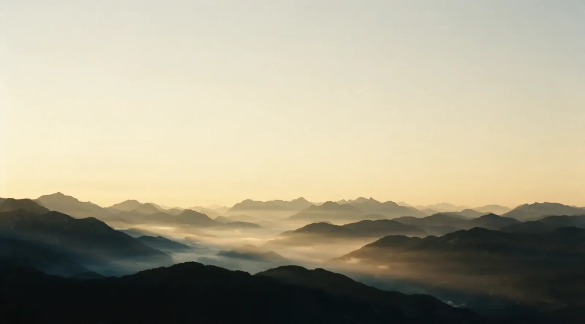
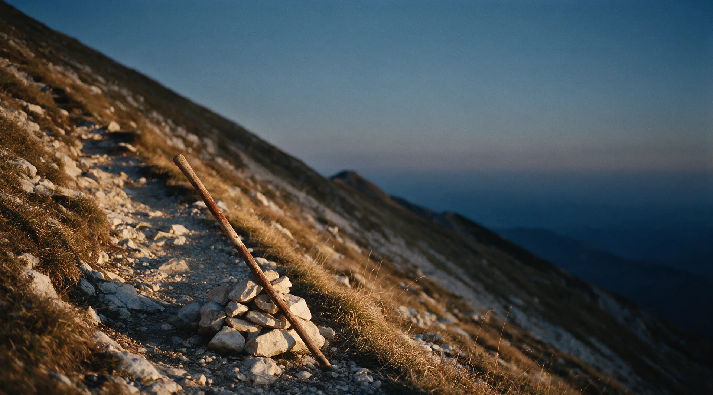
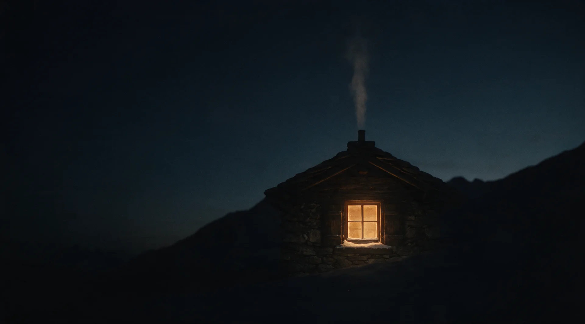

Plan A
700kr./mes
Nosotros mantenemos todo. Vos solo avisás qué cambiar.
- Cambios incluidos cada mes
- Hosting y dominio cubiertos
- Soporte directo con Franco

Diseño a medida y desarrollo digital: la imagen de tu negocio hecha realidad.
Cuatro negocios que ya encontraron su sendero.

Construimos cada sitio
como si fuera el nuestro.
Sin plantillas genéricas. Sin atajos. Un estudio de una sola persona, no una fábrica de sitios.
Somos Tierra, desde Copenhague.
Dos formas honestas de tener tu sitio. Vos decidís cuál te queda mejor.
Plan A
700kr./mes
Nosotros mantenemos todo. Vos solo avisás qué cambiar.
Plan B
20.000kr. pago único
El sitio queda tuyo. Sin mensualidad.
¿No estás seguro cuál? Contanos tu caso y lo vemos juntos.

Contanos tu idea.